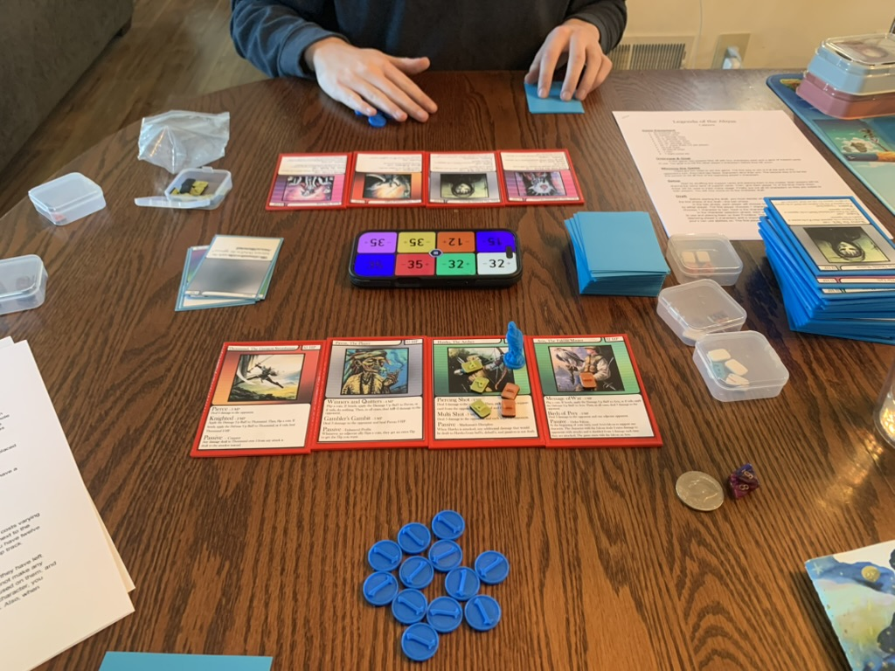

Game design & development portfolio
Designing games with purpose.
I’m Caden, a game designer and developer studying Computer Science and Mathematics at Cornell University. I’m interested in building engaging player experiences through thoughtful mechanics, strategic depth, and iterative design.
01 / Selected work
Projects
From tabletop strategy and family card games to digital combat, puzzles, movement, and narrative experiences.

Tabletop strategyLegends of the Abyss
Co-owner · Game designer
A competitive tabletop strategy game featuring character drafting, interconnected card abilities, simultaneous combat, and simulation-driven balance analysis.
 Family card game
Family card game
Rainy Days
Co-owner · Game designer
A strategic take on War, designed for quick learning, brisk play, and engaging interaction between players.
Little Wonder
Software lead · Lead level designer
An arena-based action platformer shaped by a major mid-development redesign and a focus on combat encounters.
 Arcade memory game
Arcade memory game
Mimi’s Midnight Brew
Game designer · Sole programmer
A fast-paced potion-brewing game that turns memory, time pressure, and ingredient selection into risk/reward decisions.
 Physics platformer
Physics platformer
Drizzle Dash
Project lead · Programmer
A skill-based vertical platformer centered on precise dashing, momentum, and challenging traversal.
 Gameplay systems
Gameplay systems
DGA Studios
Gameplay programmer
A configurable notebook and puzzle-progression system for an upcoming student-developed Steam release.
 Narrative game
Narrative game
Taeru
Solo designer & developer
A short narrative game exploring the experiences of civilians during World War II air raids in Japan, developed independently in under a month.
02 / About me
Designer.
Developer.
Problem solver.
I'm a Computer Science and Mathematics student at Cornell University and co-owner of Game Neighbor LLC, where my business partner and I are developing original tabletop games.
I enjoy both the creative and technical sides of game development: designing mechanics, prototyping ideas, testing how systems interact, and implementing the tools that make iteration possible.
My digital work includes award-winning game jam projects and Little Wonder, a Boston FIG finalist and recipient of Cornell GDIAC's Most Polished award.
03 / Get in touch
Let's talk games.
Interested in my work or a game design or development opportunity? I'd love to hear from you.